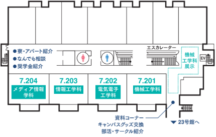
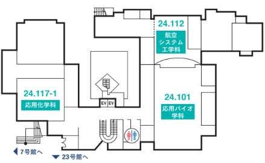
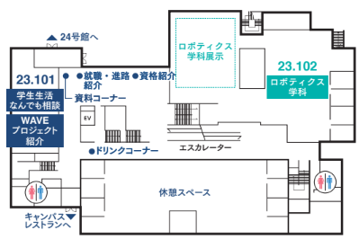
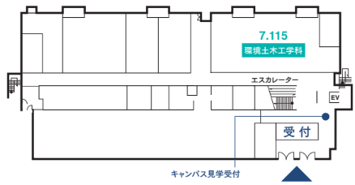
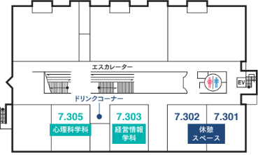
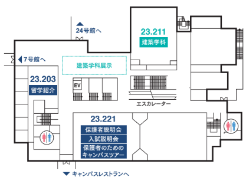

タイムスケジュール
詳細が表示されるよ！
工学部
| 時間 | イベント |
|---|---|
| 10：35 ～ 11：50 |
学科紹介 ～機械工学の魅力～
知っているようで謎だらけな機械工学。 身近なものから最先端技術を紹介・解説します。機械工学科の面白さがわかるよ！ |
| 13：00 ～ 14：50 |
暮らしの中の機械工学
毎日使っている身近なモノの仕組みを機械工学から学び、 さらに体験でわかりやすく解き明かします。 |
| 時間 | イベント |
|---|---|
| 10：35 ～ 11：20 |
航空を学ぶなら金沢工業大学へ！
魅力的な教育方針やカリキュラム、 アメリカ・ボーイング社とのグローバルなプロジェクトなどを学生も交えて紹介します。 |
| 13：00 ～ 13：50 |
実験授業で航空機について学ぼう！
航空工学には欠かせない流体力学の実験を体験します。 |
| 11：20 ～ 14：50 |
大型旅客機のシミュレータを用いた操縦体験
ＫＩＴでは航空機の設計授業の成果を学生自らがシミュレータを用いて評価します。 その、リアルなシミュレータで操縦を体験します。 |
| 11：20 ～ 14：50 |
実物の航空機で体験講義
初等練習機T3や観測ヘリコプターOH6のコックピットで、 航空機の飛行原理や航空機の構造を学ぼう！ |
| 時間 | イベント |
|---|---|
| 10：35 ～ 11：50 |
ぶっちゃけます！
ロボティクス学科での生活
普段の生活や就活はどんな感じ？ 女子でもやってける？ ３人の現役生の話を通じ、ロボティクス学科で学ぶ姿を想像してみましょう。 |
| 13：00 ～ 13：45 |
いま農業に役立つロボットが熱い！
近年、農作業支援にロボットが活躍しています。 いちごの成長制御を目的としたシステムを中心にロボット活用の最前線をお話しします。 |
| 13：50 ～ 14：50 |
４足歩行ロボットを華麗に動かしてみよう！
４足歩行ロボットを用いた体験型ワークショップ。 キミは転ばないようにロボットを上手く歩行させることができるか！？ |
| 時間 | イベント |
|---|---|
| 10：35 ～ 10：55 |
電気電子工学科 学科紹介
学科の特長、勉強内容、研究設備、進路(大学院進学、就職)、 取得できる資格等について教員から説明します。質問も大歓迎です！ |
| 10：55 ～ 11：50 |
先輩たちによる研究内容の紹介
電気電子工学科の研究室をパネルで説明します。 実際に先輩たちと話をして研究のおもしろさ、大変さを知ろう！ 研究以外の話もできるよ！ |
| 10：55 ～ 11：50 |
電気電子工学科の充実した実験設備の紹介
全国の大学の中で有数の充実した実験設備を見てみよう。 落雷の仕組み、電波や音の伝わるメカニズムを知ろう！ |
| 13：00 ～ 13：20 |
電気電子工学科 学科紹介
学科の特長、勉強内容、研究設備、進路(大学院進学、就職)、 取得できる資格等について教員から説明します。質問も大歓迎です！ |
| 13：20 ～ 13：40 |
なんでも質問セッション
実際の大学生活や日常の生活、指定寮の様子、研究・勉強時間など、 気になることを先輩たちになんでも質問しよう！ |
| 13：40 ～ 14：50 |
授業の実験を体験と研究室訪問
電気電子工学科の授業（実験）を体験！ テーマ:：電気力線と等電位線の可視化と応用、興味のある研究室を自由に訪問してみよう！ |
| 時間 | イベント |
|---|---|
| 10：35 ～ 11：50 |
KIT情報工学科トピック20連発＋3連発
情報工学科の最近の話題20個をダイジェストで、さらに3つをじっくり紹介します！ 本学科の多様性と先端性が理解できますよ！ |
| 13：00 ～ 14：50 |
RaspberryPiを用いたIoTプログラミング
IoTの時代にはハードウェアとソフトェアの両方の知識が重要！ 情報工学科で学ぶ電子工作とプログラミングを体験してみよう！ |
| 時間 | イベント |
|---|---|
| 10：35 ～ 11：50 |
環境土木工学科
学科紹介と授業・実習体験
学科の学びや就職先などを紹介します。 また、専門授業の水理学と測量実習を体験します。 |
| 13：00 ～ 14：50 |
やつかほリサーチキャンパスにある地域防災環境科学研究所
見学ツアー
地域防災環境科学研究所の見学ツアーに参加して、 研究所で取り組んでいる研究テーマと実験施設を体験しよう。 |
情報フロンティア学部
| 時間 | イベント |
|---|---|
| 10：35 ～ 11：50 |
学科紹介＆『自分で作れるヴァーチャル・リアリティ！』
仮想現実の原理とそれを実現している技術を、 スマホを使ったヘッドマウントディスプレイ（HMD）を実際に作りながら学びます。 |
| 13：00 ～ 14：10 |
視覚デザインに挑戦！
立体視3Dイメージ制作
人の両眼立体視のしくみを学び、絵のないところに3Dイメージが浮かび上がって見える CGステレオグラムをデザインしよう！ |
| 14：10 ～ 14：50 |
メディアコンテンツ系プロジェクト活動紹介！
メディア技術を活用した実践的な地域活性化プロジェクトについて、 学生の取り組みやプロジェクションマッピングなどの成果を紹介します。 |
| 時間 | イベント |
|---|---|
| 10：35 ～ 11：50 |
ＡＮＡと最新のロボットビジネスを創ろう
ＫＩＴと提携したＡＮＡの世界最先端のロボットを活用したビジネスを シリコンバレー流イノベーション手法を使って一緒に考えよう！ |
| 13：00 ～ 14：50 |
カードゲームでイノベーション力を高めよう！
～社会課題を楽しみながら解決する～
国連ＳＤＧｓに貢献する日本一の大学に選ばれた ＫＩＴのオリジナルＳＤＧｓカードゲームを体験して、課題解決能力を高めよう！ |
| 時間 | イベント |
|---|---|
| 10：35 ～ 11：50 |
心理科学科のホントのトコロ
「心理科学科では何を学ぶの？」 「普段の生活は？就職は？」・・・現役学生のプレゼンで大学生活の疑問をまるごと解消！ |
| 13：00 ～ 14：50 |
ホントの心理学体験：実験・データ処理・プレゼン！
「こころの働き」を調べるための色々な現象を味わい体験！ 大学生と（教員とも？）一緒に心理学実験できます！ |
建築学部
| 時間 | イベント |
|---|---|
| 10：35 ～ 11：50 |
金沢で学ぶ、建築を学ぶ。
歴史的街並みが残る金沢で建築を学ぶ意義と、本学建築学科の特徴を説明します。 また、プロジェクト活動の成果を学生が発表します。 |
| 13：00 ～ 14：50 |
建築の日々、建築の未来。
日本建築学会賞も受賞した扇が丘キャンパスのツアーです。 学習環境、授業成果物、研究・プロジェクト活動を紹介します。 |
バイオ・科学部
| 時間 | イベント |
|---|---|
| 10：35 ～ 11：50 |
無機蛍光体を作ってみよう！
きれいな蛍光を発する無機化合物を合成します。 添加する金属イオンを変え、様々な色調の蛍光体を作ってみましょう！ |
| 13：00 ～ 14：50 |
有機色素の合成に挑戦しよう！
有機化学実験の設備・器具を用い、4種類の美しい色素を合成します。 一足早く、大学の実験を体験してみましょう。 |
| 時間 | イベント |
|---|---|
| 10：35 ～ 11：50 |
日曜大工？
ＤＩＹバイオを体験してみよう！
小さくて安価な“箱”が最先端のバイオテクノロジー研究を可能にする！？ ＤＩＹバイオに触れて未来に待ち受ける問題を考えよう！ |
| 13：00 ～ 14：50 |
イースト菌を使って医薬品原料を作ってみよう！
イースト菌を用いた還元反応を利用して、 抗生物質の原料として有用なマンデル酸を合成します。 |
学科別教室場所
-
工学部
学科名 教室場所 機械工学科 教室：7.201 
航空システム工学科 教室:24.112
ロボティクス工学科 教室:23.102
電気電子工学科 教室:7.202
情報工学科 教室:7.203
環境土木工学科 教室:7.115
 -
情報フロンティア学部
学科名 教室場所 メディア情報工学科 教室:7.204
経営情報工学科 教室:7.303
心理科学科 教室:7.305
-
建築学部
学科名 教室場所 建築学科 教室:23.211
 -
バイオ・科学部
学科名 教室場所 応用化学科 教室:24.117-1
応用バイオ学科 教室:24.101
学内マップ
扇が丘キャンパス全体マップ